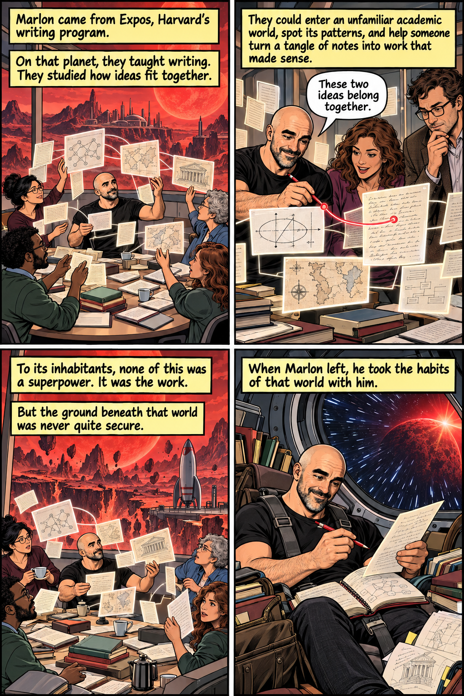

01 / Golden Age · The immigrant story
Ordinary there. Extraordinary here.
A power carried from another world
In this version, the power comes from somewhere else. A practice that everyone shared on the home world becomes extraordinary under new conditions. Marlon brings the writing teacher’s eye for patterns and unfamiliar ideas; Jonah keeps a passage open to that world. Jordan carries the color of an island of artists, and Madeleine brings living structures from folklore, myth, and botanical knowledge.
The Superman-inspired question is what survives the crossing, and what a new world lets it become. For the Lab, the yellow sun is partly a change in institutional conditions: familiar humanities abilities meet tools, collaborators, and funding. The team assembles because each person brings something different.
Superman first appeared in 1938, created by Jerry Siegel and Joe Shuster, both sons of Jewish immigrants. Shuster was also an immigrant himself: born in Toronto, he moved to Cleveland with his family in 1924; Siegel was born in Cleveland to Lithuanian immigrant parents. The Library of Congress connects that history with Superman’s immigrant story. His debut came in a period shaped by the 1924 national-origins quota system, which sharply restricted immigration, especially from Southern and Eastern Europe. Read against that setting, the person from elsewhere who makes an ordinary public life while carrying another inheritance offers a powerful way to think about belonging and assimilation. It is a reading of Superman and this experiment—not a description of every Golden Age hero, or a claim that biography alone explains the character.
The assembly stories below bring together the four workshop leaders featured here. They are imagined encounters among this selected quartet, not an account of everyone who works in the Learning Lab or led an origin-story workshop.
{kind=link}
02 / 1960s Marvel · The accident
Something happened to us.
Exposure creates a new power
Change the origin mechanism and the same people become a different kind of hero. Here an extraordinary exposure creates a literal new capacity: a scanner, a prism, a botanical instrument, an argument-making machine. The person’s earlier interests shape the power, but the accident marks a real before and after.
This is our Atomic Age adventure: the exhilaration and danger of getting too close to a powerful new technology. It offers a playful way to imagine encountering AI at work—something happened, and now familiar practices can do unfamiliar things. The team’s task is to turn four unpredictable accidents into something people can use.
The early Marvel years put rockets, laboratories, and dangerous exposure at the center of several famous origins. The Fantastic Four gained their powers from cosmic rays on a space flight in 1961; in 1962, Bruce Banner’s gamma exposure and Peter Parker’s radioactive spider offered two more transformations through hazardous science. These stories belong to the world of the Cold War and the space race, where technological ambition could promise discovery and threaten catastrophe at once. That context makes the accident an especially suggestive narrative form: the future enters the body, and the person must learn how to live with its consequences. This is a recurring pattern, not a rule for all Marvel heroes—and the technological origins also leave room for stories about family, adolescence, responsibility, and difference.
{kind=link}
03 / 1990s X-Men · The mutant
The difference was always there.
Innate power, stigma, and solidarity
Here nobody needs to arrive from another planet or be struck by a ray. The capacity was already part of the person; pressure makes it impossible to hide. The gift and the thing that marks someone as strange are inseparable. These darker stories ask what happens when the world insists that every mind fit an approved outline.
The Lab becomes a place to assemble without becoming the same. Its purpose is not to cure the difference, but to give it company and room to act. This version follows the identity-and-belonging reading of X-Men in the handoff notes, with the gritty visual language of the later comics. The team can hold a door open even while the searchlights keep moving.
The X-Men began in 1963, returned with an international team in 1975, and took a defining 1990s form with the 1991 Blue and Gold teams. The later Claremont-era stories and their successors gave questions of prejudice, identity, and belonging sustained new forms; those questions were not absent from the beginning. In The New Mutants (2016), Ramzi Fawaz reads superhero comics through civil rights, the New Left, feminism, and gay liberation, asking how fantastic bodies could model new kinds of solidarity. His argument includes Fantastic Four and Justice League as well as mutant comics, so this history crosses our section boundaries. Our dark edition draws on that outsider reading and the later comics’ visual intensity: a difference can be a source of affiliation without needing to disappear. It does not imply that every X-Men story has one allegorical meaning or that the characters never hide who they are.
{kind=link}
04 / Big-money Hollywood · The resources story
What if the power is what you can build?
Equipment, capital, labor, and the scale of the spectacle
The fourth frame turns from inherited powers, accidents, and mutation toward money, tools, infrastructure, and sustained work. A workshop becomes a Batcave; a prototype becomes a suit of armor. The interesting question is not simply whether a person is brilliant, but what lets that brilliance act: access to equipment, time to experiment, technical collaborators, and someone willing to fund the next version. In a Lab story, this can be both a fantasy of making things and a joke about what the purchase order leaves out.
The wealthy equipment hero is much older than the current blockbuster era: Batman debuted in 1939, and Iron Man dates to 1963. What changes in the 2000s is their renewed cinematic prominence. Christopher Nolan’s Batman trilogy ran from 2005 through 2008 to 2012; Kevin Feige described Iron Man (2008) as the first self-produced Marvel Studios film and the announcement of its interconnected universe. These are anchors for a question, not proof of a single cultural cause: what becomes attractive when extraordinary private resources, engineering skill, and individual resolve are imagined as the means to address public problems? And how does that fantasy change when the spectacular object depends on a much larger, less visible collective of makers?
In this deliberately ridiculous universe, Marlon has money, Jonah has twice as much money because he has two jobs, Jordan buys the island with horses, and Madeleine acquires the country house around her botanical collection. Their greatest emergency is a free-plan limit. All wealth and luxury here are fictional exaggerations.